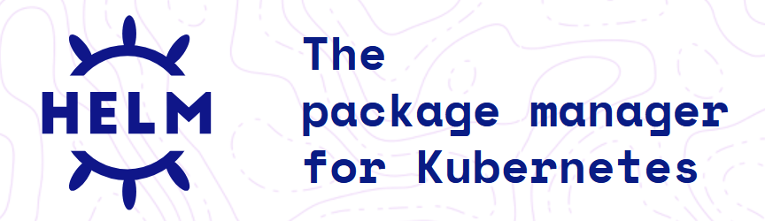

Helm Tutorials

Table of Contents
- What is helm ?
- Walk through helm official Docs
- Using exisiting helm charts
- Know Repo
- Release
- Values files
- using command -set option
- Update the exisitng release
- rollback the release to previous version
- Getting the exisitng values files
- Using multiple environment using helm
- Debug and dry run
- Helm Chart Creation
Prerequisites
- Basic understanding of Kubernetes
- Familiarity with Linux commands
- Visual Studio Code (VSCode)
kubectl command-line tool- Helm CLI
Hands-On Demos
- Deploy applications using existing Helm charts
- Create custom Helm charts from scratch
- Explore and practice key Helm commands